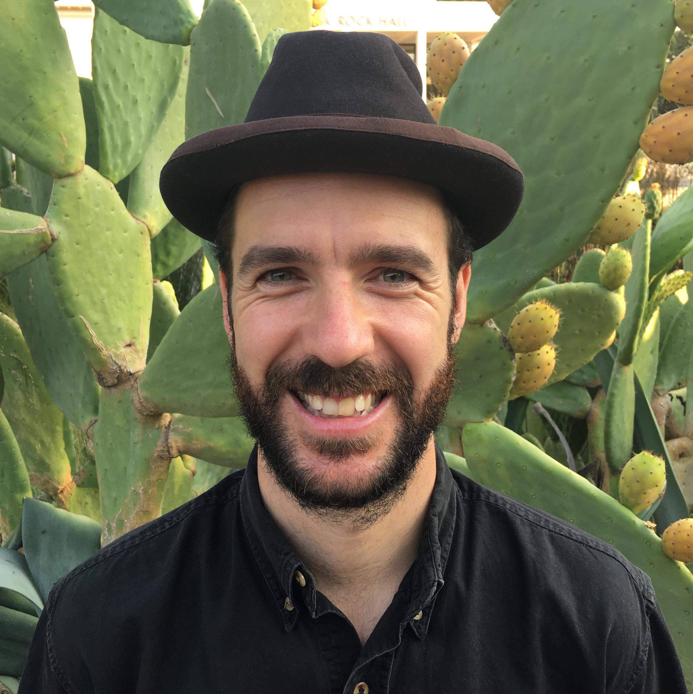
Mini CV: CPB postdoc at UC Davis with Graham Coop, Sebastian Schreiber, & Andrew Whitehead, PhD at UBC with Sally Otto, "post-master" at MSU with Chris Klausmeier, MSc at McGill with Claire de Mazancourt, and math-bio BSc at Queen's (thesis with Laurene Ratcliffe and Matt Reudink).
Present
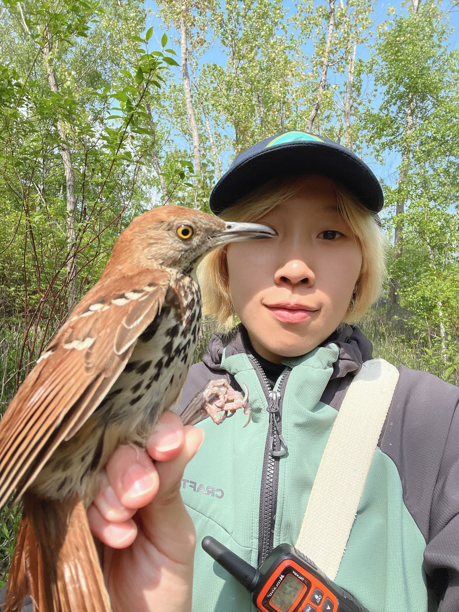
Locating genetic ancestors of penguins.
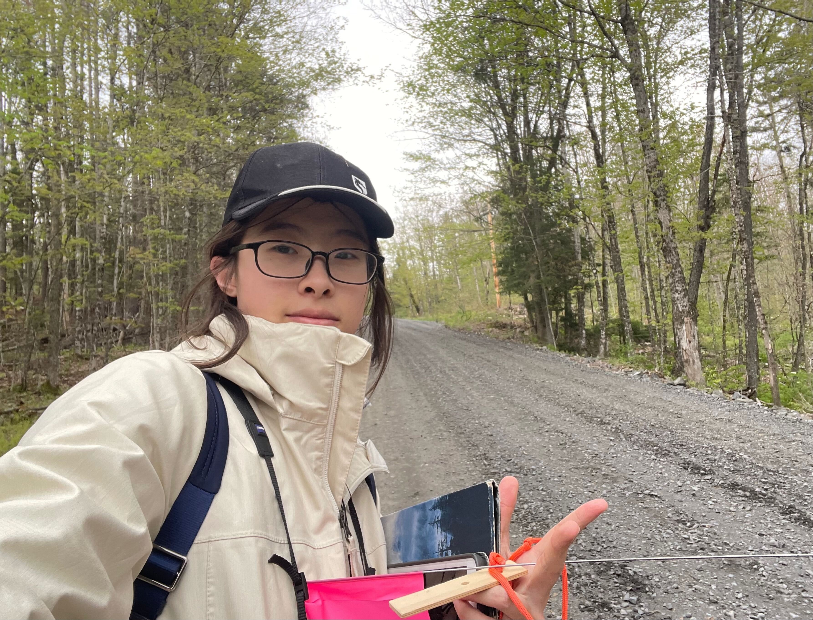
Locating genetic ancestors of humans.
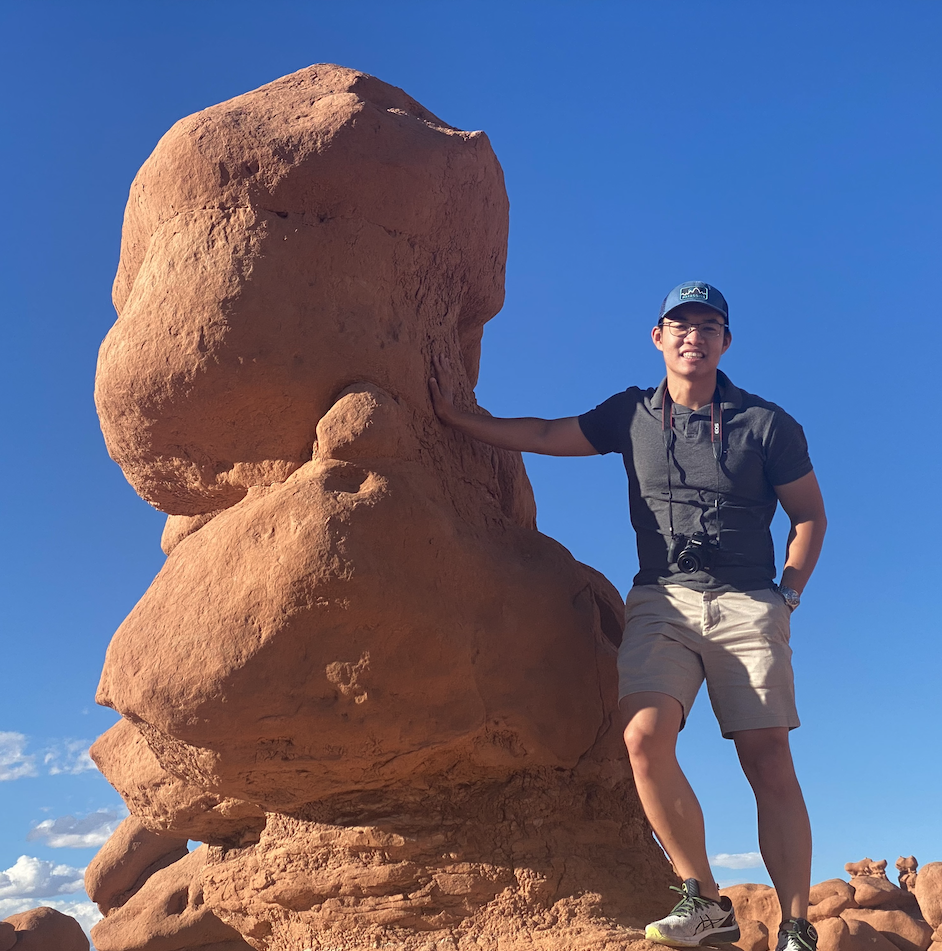
I am a theoretical evolutionary biologist, and previous research covers topics in the evolution of plant mating systems and its effects on population persistence, evolutionary rescue, flowering strategies, sexual selection, and behavior. In my postdoc, I am interested in integrating real/simulated data with models to obtain a better understanding of the biological world. I enjoy hiking, playing instruments, and exploring historical sites, botanical gardens and art museums. Previously I did a PhD at UNC with Maria Servedio and Todd Vision, an MS in Economics at UNC, and a BS in Physics at Peking University (China).
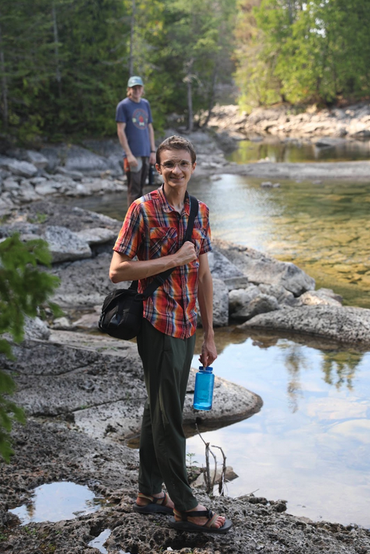
I’m from central Ohio, and completed an EEB undergraduate degree at The University of Pennsylvania in Philadelphia, PA. While studying at Penn, I worked in a lab studying the symbiosis between corals and algae. I was just hoping to do tropical fieldwork, but instead found myself interested in using models why such complex mutualistic interactions evolve! Today, I study mutualistic coevolution by combining theory with laboratory experiments.
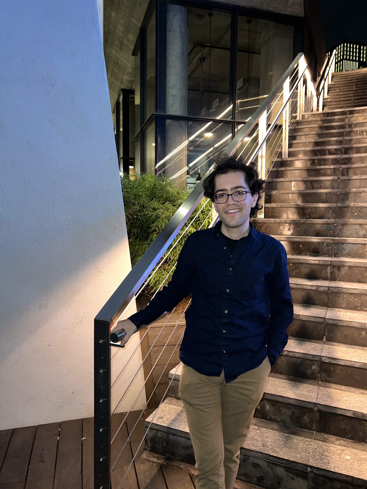
I grew up in northern Idaho, on the rolling hills of the Palouse. I first became interested in theoretical biology as an undergraduate math and statistics student at the University of Idaho. At the U of I, I worked on models of gene drive interventions to suppress vector-borne diseases, Chinook salmon abundance in the Willamette River system, and mechanisms of competitive exclusion in spatially structured populations. I am broadly interested in the population genetics of host-pathogen interactions, and am currently developing theory to understand how patterns of pathogen recombination depend on host life history. Outside of science, I enjoy podcasts, cooking, spending time outdoors, and exploring the many neighborhoods of Toronto!
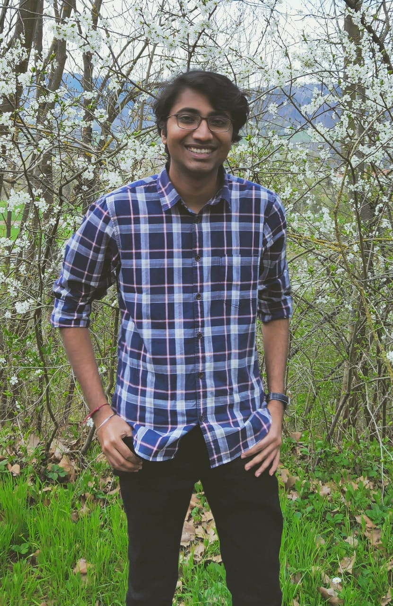
I grew up in India and did my BS-MS from IISER Mohali (India) with a major in Mathematics during which time a couple of courses got me interested in evolution. This led to doing a part of my master’s thesis in Germany working on a model of evolutionary rescue, focusing on the effects of mating systems. In my PhD, I continue to work on evolutionary rescue models, where I am looking at how an epigenetic basis of adaptation affects survival. In addition, I have also been interested in coalescent theory. Particularly, I am working on developing a method to utilize ARGs (Ancestral Recombination Graphs) to infer the spatial history of a population. The binding theme of the projects as well as a key interest of mine is the use of stochastic processes like branching processes and Brownian motion. Apart from research and academics, I am into felting, hoarding books, and stalking birds.
Past
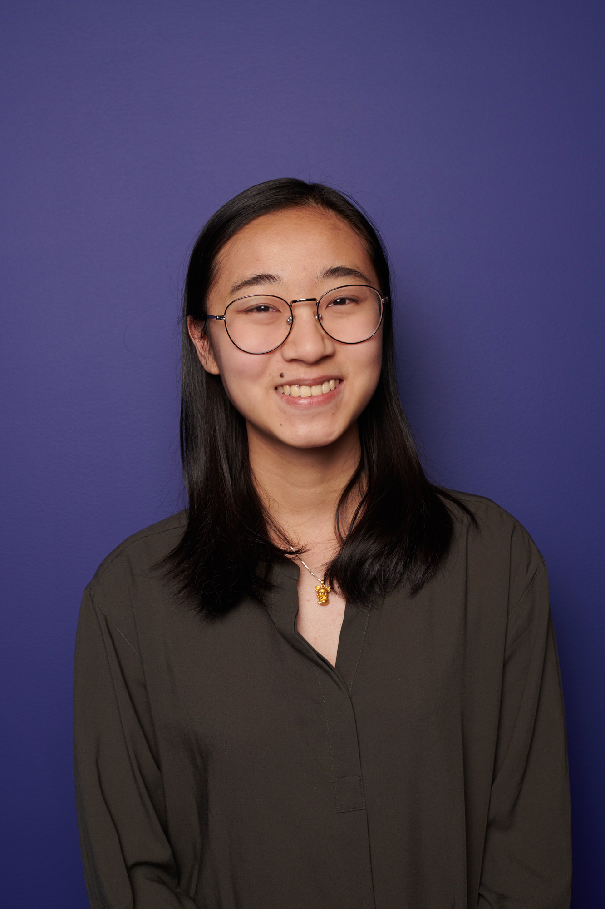
Shiny app for viral emergence models. Github

How life-history affects population persistence in a gradually changing environment.
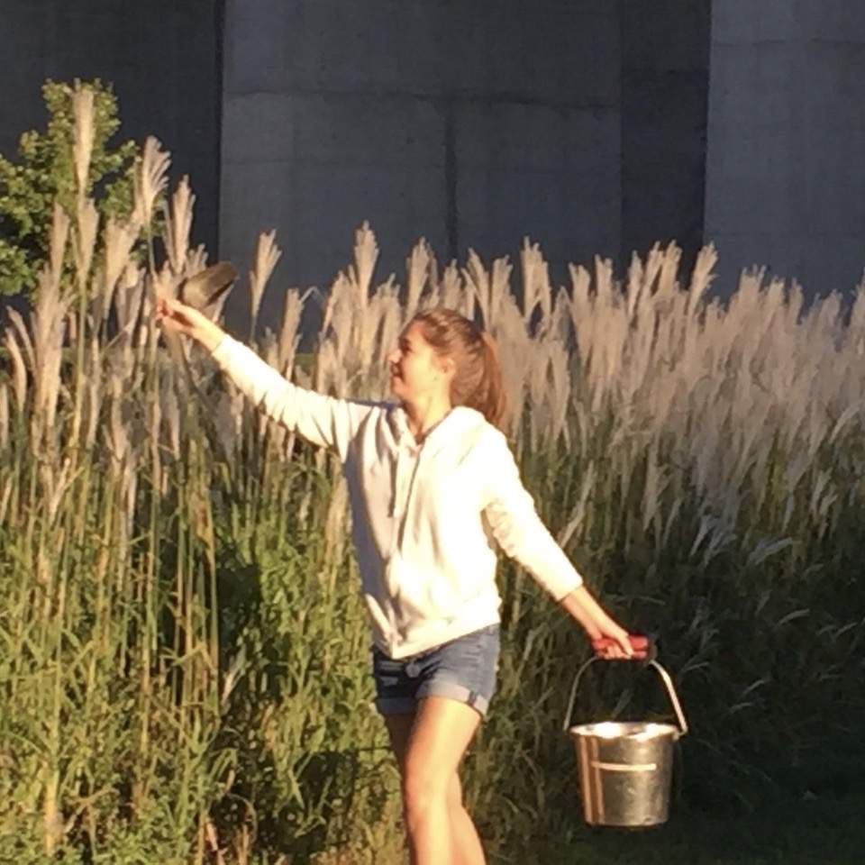
I did my undergraduate degree at U of T in Math, Physics, and Ecology & Evolutionary Biology. I love evolutionary theory because it involves math, coding, and discovering the fundamental mechanics of evolution!
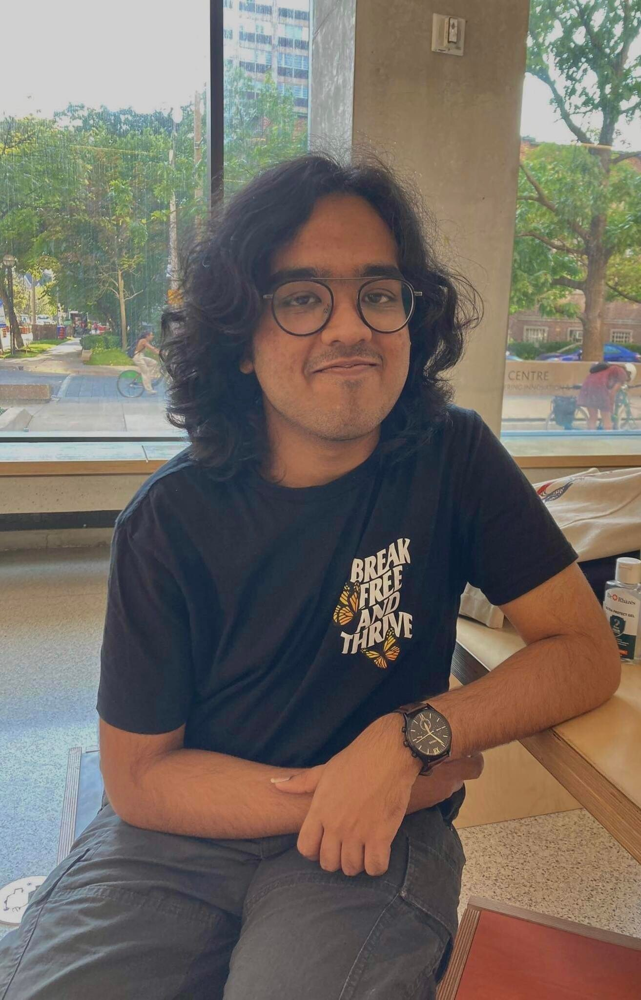
Simulating the spatial history of Arabidopsis thaliana. Github: slendr-proj
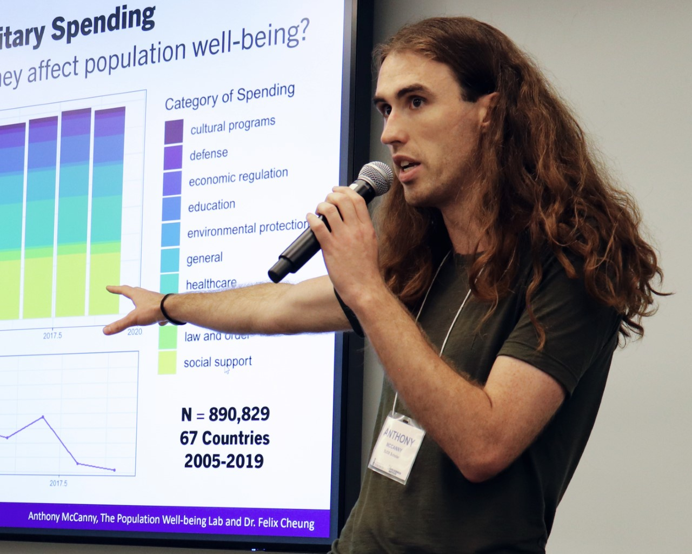
Paper: Impact of transgenerational epigenetic inheritance on evolution: a theoretical perspective

Visualizing genetic ancestry in space. Github: space-trees
Future
See Join for more info